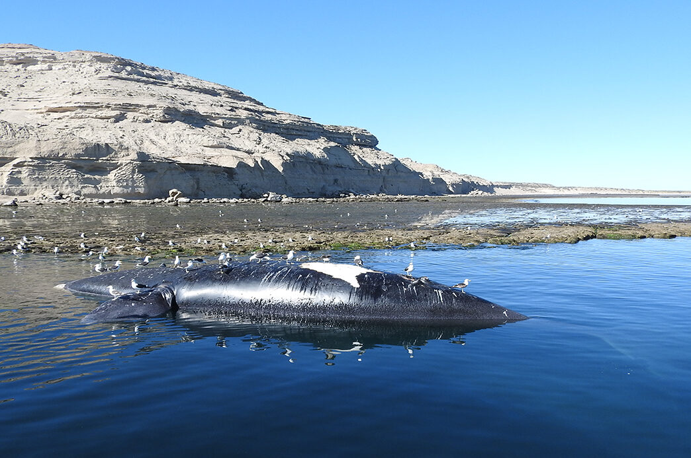
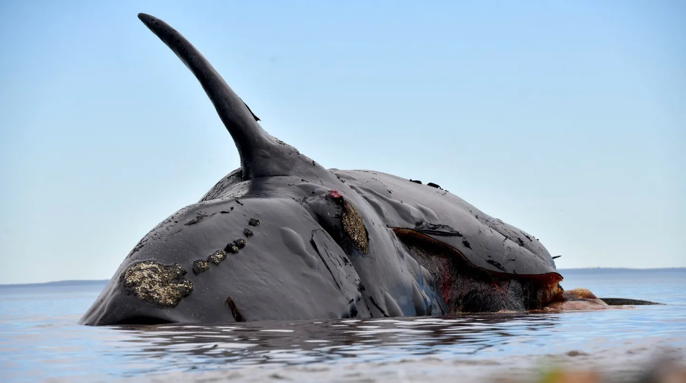

"MAREA ROJA": LAS BALLENAS DE CHUBUT FALLECIERON INTOXICADAS POR ALGAS

Una serie de instituciones científicas que investigaban las causas del fallecimiento de 30 ballenas en el Golfo Nuevo, al noreste de Chubut, confirmaron ayer que las muertes estuvieron provocadas por la presencia de toxinas de "marea roja" en su organismo, una intoxicación provocada por una floración nociva de algas en la región.
En contexto. En total, los investigadores realizaron necropsias en 6 de las 30 ballenas encontradas muertas en la región del Golfo Nuevo, y colectaron muestras parciales de otras 3.
En detalle. Los estudios comprobaron que las ballenas se encontraban en excelente estado antes de morir, pero habían ingerido algas productoras de biotoxinas capaces de causar la muerte de aves y mamíferos marinos, incluyendo grandes ballenas.
También importa. La investigación fue realizada de manera conjunta por el Programa de Monitoreo Sanitario Ballena Franca Austral (PMSBFA), el Instituto de Conservación de Ballenas (ICB), el Instituto Nacional de Investigación y Desarrollo Pesquero (INIDEP), el Instituto de Investigación de Hidrobiología de la Universidad Nacional de la Patagonia San Juan Bosco y la Dirección de Fauna y Flora Silvestres de Chubut

Salvemos las ballenas
Flyzar, entre las principales compañías de aviación ejecutiva de Latinoamérica
Pionera en desarrollar la aviación privada en la Argentina, la empresa administra el avión de Lionel Messi y traslada a celebridades del mundo deportivo, artístico y empresarial. Viaja a todas partes del mundo, con los más altos estándares de seguridad y confort en una experiencia sinigual.
Hace 35 años, Flyzar fue pionera en desarrollar el negocio de la aviación privada en la Argentina. La empresa familiar cambió varias veces de nombre y desde 2009 funciona con su actual denominación. A partir de entonces, se convirtió en una abanderada de los cielos argentinos y del mundo, sinónimo de lujo a bordo. Con la trayectoria y el espíritu innovador que la caracteriza, ofrece los más altos estándares de seguridad y atención personalizada, que permiten disfrutar de una experiencia excepcional en cada trayecto.
Quién se queda y quién se va de la casa: el Gobierno juega su propio Gran Hermano
Volviendo al grotesco episodio con el reality. Da vergüenza ajena pero, ante todo, explica muchas cosas que el Gobierno se esté peleado con Gran Hermano. Es el Gobierno el que vive en un reality mientras los argentinos viven en la realidad. Nos pasamos este mandato viendo cómo ellos se nominan entre ellos y se expulsan de la casa en una puja por cajas y ministerios. Y que el principal objetivo además del poder claro, como en el caso de los participantes del reality, es buscar inmunidad. El que es inmune, como corresponde, sigue en la casa. Es una gran síntesis de este Gobierno. Lo único que les importa es seguir en la casa, Rosada.